Doprava po celom Slovensku
Materiál dovezieme na miesto stavby, ktoré určíte, autami Avia 3,5 t a Iveco 8 t s mechanickou rukou.
Naša predajňaNovozámocká 62/68, Nitra
Rodinná firma od roku 1997Novozámocká 62/68Po – Pi 7:00 – 16:00So 7:00 – 12:00
Spotrebu spočítame a cenovú ponuku pripravíme zadarmo. Materiál dovezieme vlastnými autami po celom Slovensku, aj autom s mechanickou rukou.
Prezrieť katalógAktuálne akcie


Tehly TermoBRIK, pórobetón Porfix, betónové prvky Stadreko a stavebné rezivo tak, ako ich u nás v Horných Krškanoch nájdete.
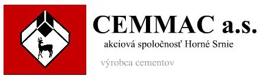
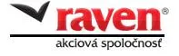
15 kategórií a viac ako 40 značiek popredných slovenských aj svetových výrobcov. Spotrebu na celú stavbu vám spočítame zadarmo.
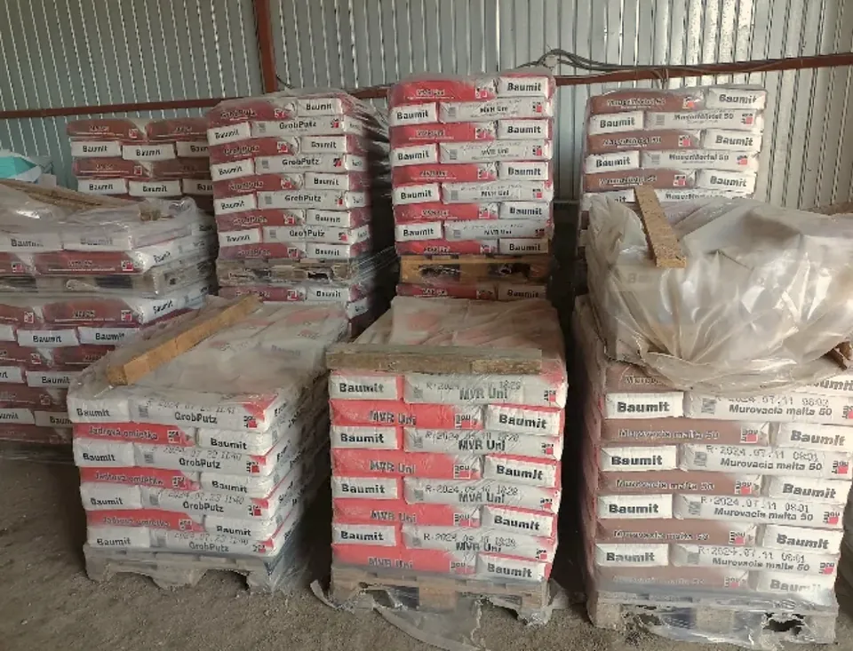
Cement, vápno, malty, omietky, lepidlá, stierky a samonivelačné hmoty.
Baumit, Cemmac, Calmit, Holcim, Murexin, Univerbau
Tehly, pórobetónové a betónové tvárnice, preklady a stropné systémy.
Pezinské tehelne, Ytong, Porfix, Betonárka Nadlice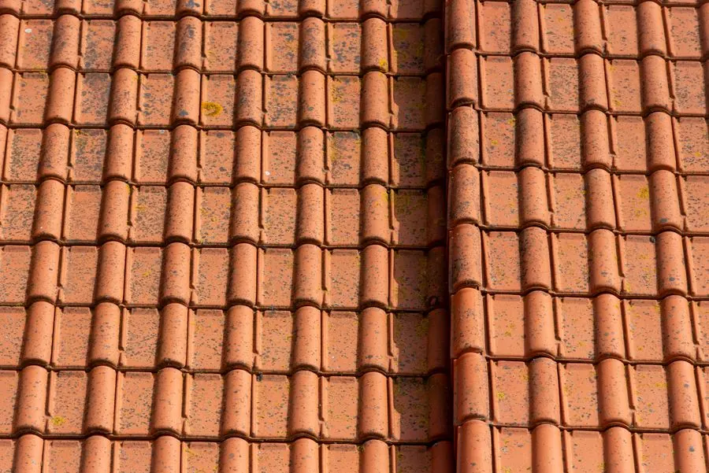
Pálené a betónové škridly, plechové krytiny, asfaltové pásy a príslušenstvo.
Tondach, Bramac, Mediterran, Onduline, Icopal, Blachotrapez
Zámkové dlažby, terasové platne, obrubníky, palisády a plotové systémy.
City Stone Design, Premac, Stadreko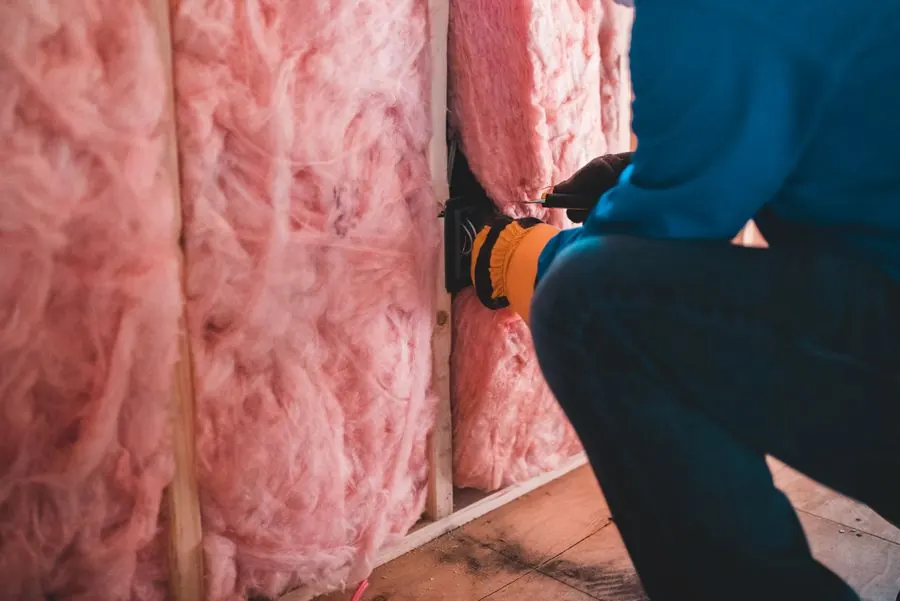
Minerálna vlna, polystyrén, asfaltové pásy a izolácie proti vode a radónu.
Knauf Insulation, Isover, Nobasil, Icopal, Den Braven, Climowool
Certifikované komíny so šamotovou alebo nerezovou vložkou.
Stadreko, Schiedel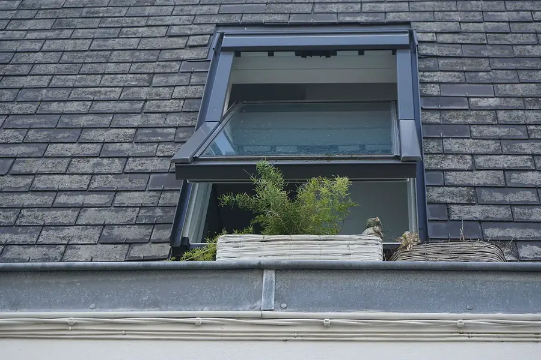
Kyvné a výklopné strešné okná, výlezy, svetlíky, podkrovné schody a doplnky.
Velux, Fakro, RoofLITE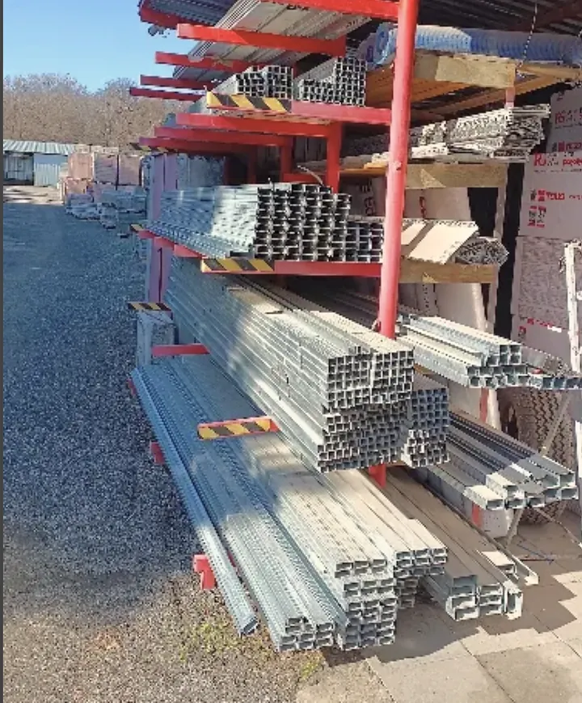
Betonárska oceľ, siete, plechy, profily, rúry, zárubne a garážové brány.
Yssel Steel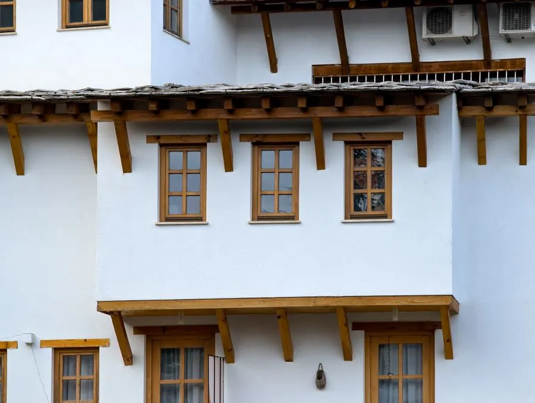
Interiérové, vchodové, bezpečnostné a posuvné dvere, drevené okná s dvojsklom.
Masonite
Dosky, hranoly, foršne, strešné laty, tatranský profil a krovy na mieru.
Drepex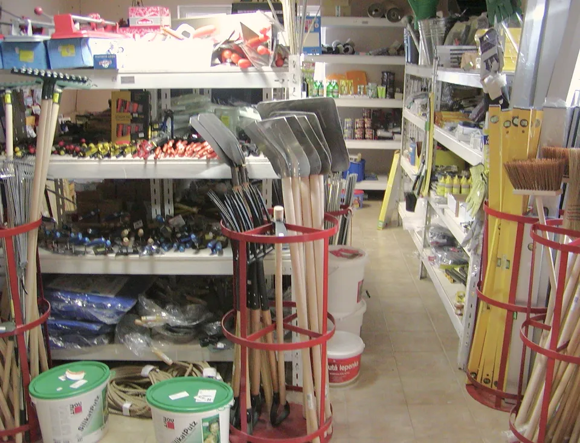
Stavebné, elektrické a záhradné náradie, spojovací materiál, mriežky a poklopy.
Slovakia Trend, DS Haco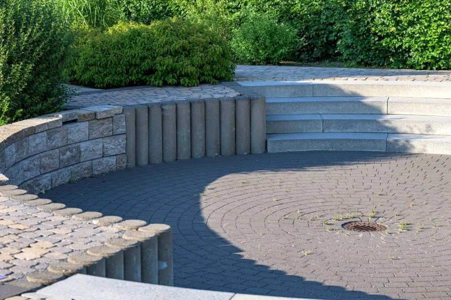
Plastové zatrávňovacie dlažby, plotovky, profily, platne a káblové žľaby.
Transform RecyklingSuchá výstavba, profily, polystyrén, sklotex, fólie a strešné doplnky.
Stavebné profily, Masterplast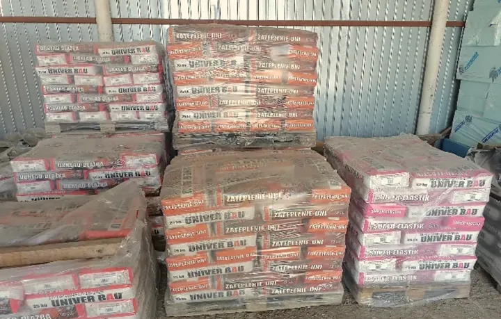
Silikónové, silikátové a mozaikové omietky, fasádne farby a zatepľovacie systémy.
Baumit, Univerbau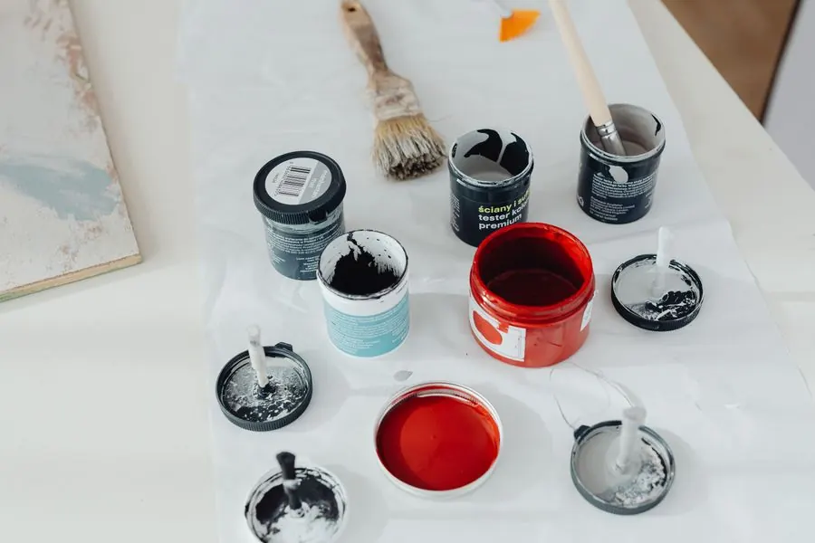
Interiérové a fasádne farby, laky, lepidlá, riedidlá a tónovacie systémy.
Het, Chemolak, Chemos, Elastik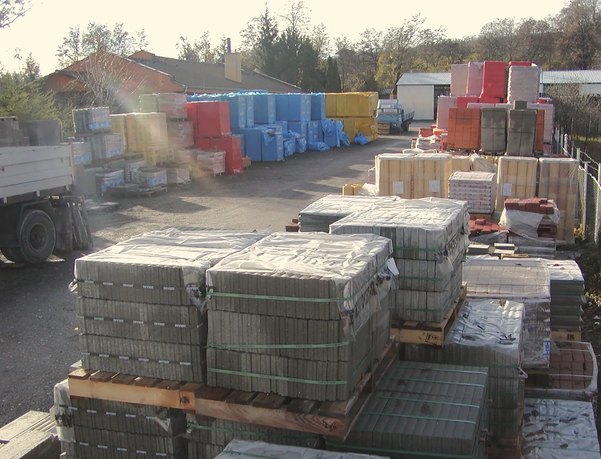
Vlastnými autami po celom Slovensku, aj autom s mechanickou rukou. Tovar ide priamo na stavbu, bez zbytočného prekladania, a preto je menšie riziko poškodenia.
Ceny podľa cenníka akcií z 28. 1. 2026, platnosť potvrdí predajňa.
 Akciová cena
Akciová cenaBrúsené tehly TermoBRIK so systémom Dry, lepidlo zdarma. Na váš dom pripravíme individuálnu cenovú ponuku. Doprava až na stavbu zdarma, vykládka za poplatok.
 Na sklade
Na skladeCertifikovaný komínový systém priamo na sklade, odber ihneď. Napríklad kompletný komín 6 m, ø 160/90 za 618 € s DPH.
 Doprava 17 €
Doprava 17 €Pri odbere nad 50 m²: škridloplech od 9,22 €/m², trapézové plechy od 8,28 €/m² a doprava po celom Slovensku za 17 €, ceny s DPH. Vykládka 40 € s DPH.
 Akciová cena
Akciová cenaDlažby, obrubníky, plotové tvárnice, striešky, svahovky, palisády a zatrávňovačky za akciové ceny, napríklad dlažba Holland od 10,45 €/m² s DPH.
 Zľava 20 %
Zľava 20 %Strešné okná, podkrovné sklápacie schody a strešné doplnky so zľavou 20 %, v rôznych druhoch a rozmeroch.
 Akciová cena
Akciová cenaDosky, hranoly, strešné laty, foršne, tatranský obklad, palivové drevo a krovy na mieru za akciové ceny, rezivo priamo na sklade.
So zákazníckou kartou získate z akciových cien ďalšiu zľavu: 5 % pri platbe v hotovosti, 3,3 % pri platbe kartou. Stavebným firmám, živnostníkom a predajniam stavebnín poskytujeme špeciálne zľavy.
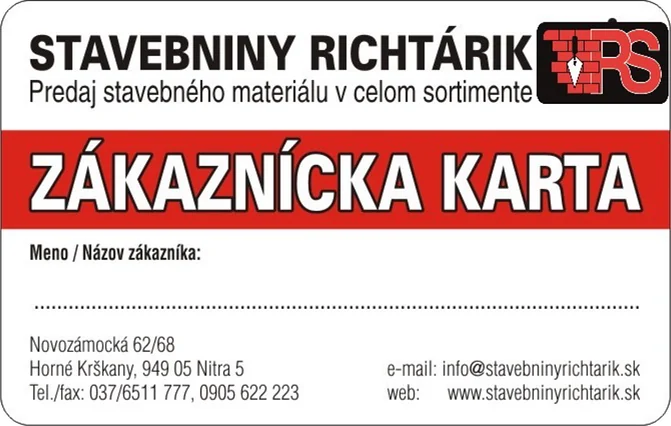
Vyzdvihnete si ju v predajni na Novozámockej 62/68 v Nitre.
Od výberu materiálu po dopravu na stavbu: poradenstvo, výpočet spotreby a cenová ponuka sú u nás zadarmo.
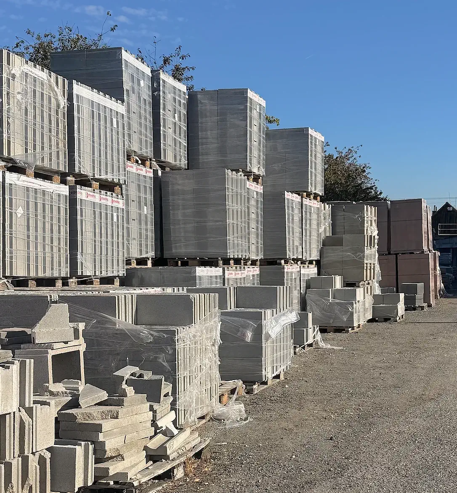
Materiál dovezieme na miesto stavby, ktoré určíte, autami Avia 3,5 t a Iveco 8 t s mechanickou rukou.
Pošlite nám projekt alebo zoznam materiálu e-mailom, prípadne ho prineste do predajne.
Zadarmo spočítame, koľko tehál, izolácie, krytiny alebo omietky na stavbu potrebujete.
Zaškolený personál s dlhoročnými skúsenosťami v stavebníctve vám poradí s výberom materiálu.
Pri väčšom odbere. Stavebné firmy, živnostníci a predajne stavebnín majú navyše špeciálne zľavy.
V predajni môžete platiť kartou cez terminál VÚB banky a stavebný materiál kúpiť aj na splátky cez Quatro.
Dekoračné kamene, ohybný kamenný obklad Delap, plnivo Ekostyrén a betónové výrobky.
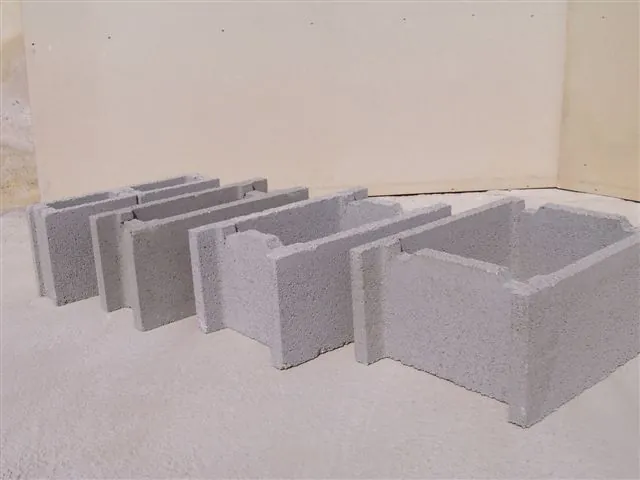
Šalovacie diely, tvárnice a betónové prvky za akciové ceny.
Biely mramorový okruhliak, čierny Nero Ebono a kamenná kôra vo vreciach po 25 kg.
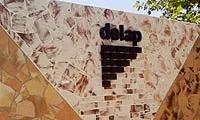
Prírodný kameň v ohybných pásoch, 7 tvarov, balenie 4 m², akciová cena 17,80 €/m² s DPH.
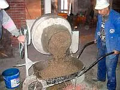
Plnivo do betónu z polystyrénovej drte na ľahký tepelnoizolačný betón do podláh a striech.
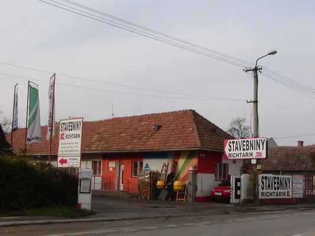
Stavebniny Richtárik založil Ing. Mário Richtárik v roku 1997. Predávame a sprostredkúvame stavebný materiál, majiteľ aj personál majú dlhoročné skúsenosti v stavebníctve.
Poradenstvo a cenové ponuky sú u nás zadarmo. Najdôležitejšia je pre nás vaša spokojnosť.
Viac o násPrejdite sa predajňou na fotkách: od tabule pri ceste cez sklad až k pultu.
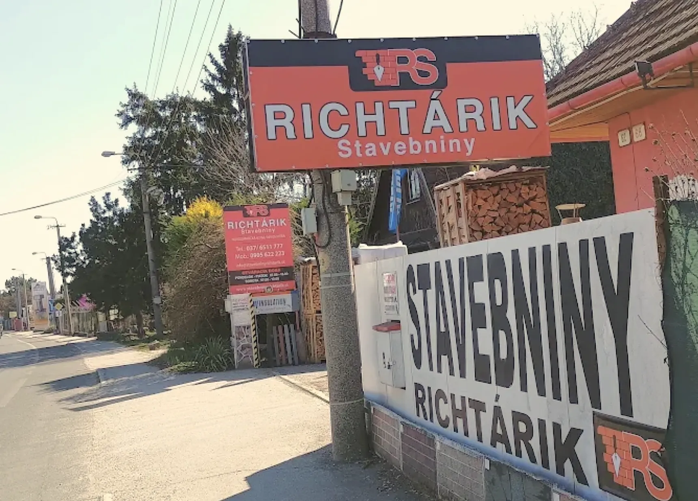
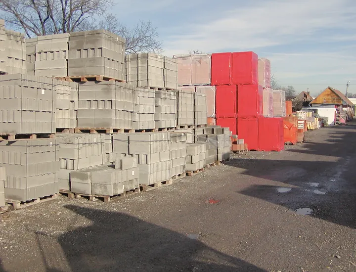
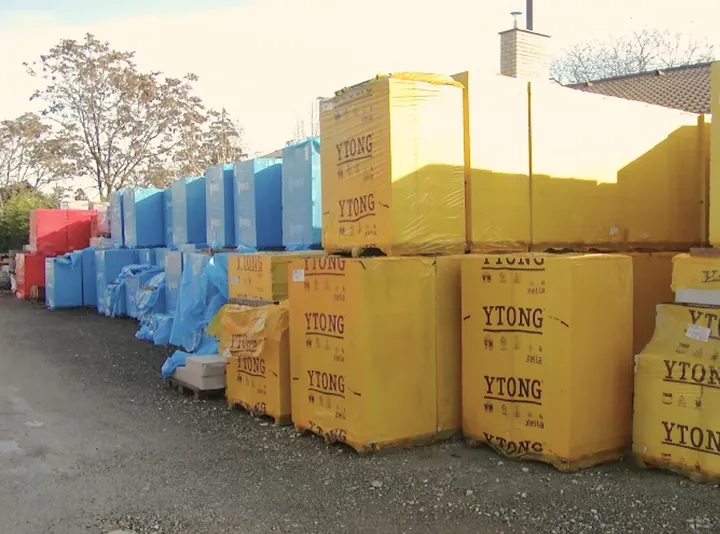
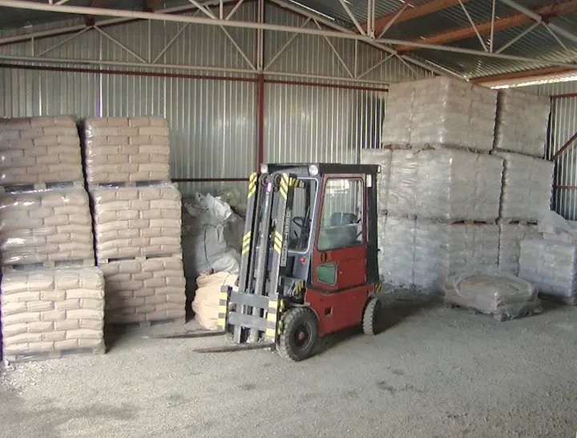
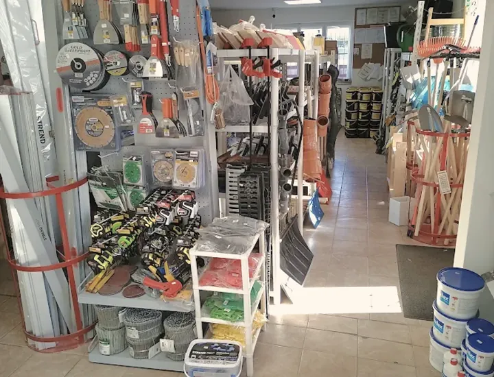
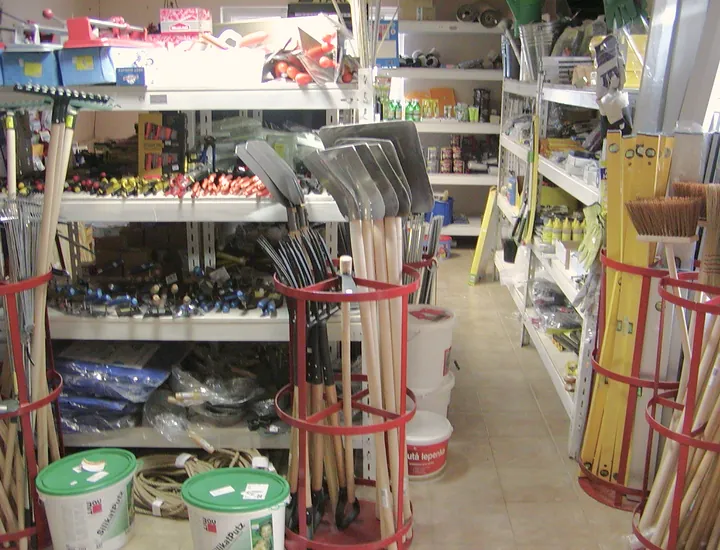
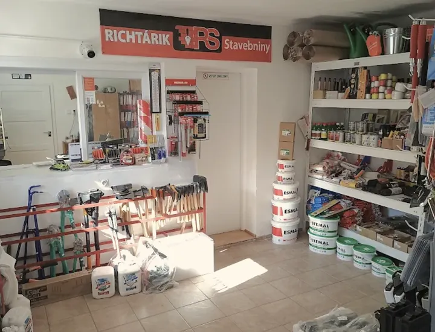
Spočítame spotrebu, pripravíme cenovú ponuku a dohodneme dopravu na stavbu.